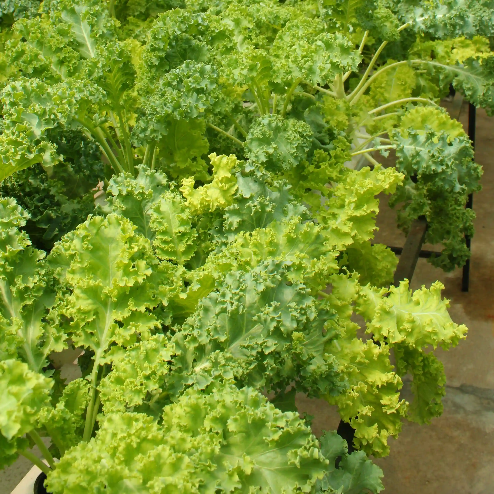

PRODUCT



Pakcoi muda yang renyah dengan rasa ringan dan alami, sempurna untuk sup, tumisan, atau sajian segar
Daun aromatik segar dengan rasa sejuk dan menyenangkan. Cocok untuk infused water, teh herbal, garnish makanan, atau campuran dessert sehat.
Sayuran hijau yang populer dengan batang renyah dan daun lembut. Sering diolah sebagai tumisan, cah kangkung, atau campuran mie dan nasi goreng
Sayuran superfood dengan tekstur keriting dan rasa sedikit pahit. Sering dijadikan smoothie, salad, atau dipanggang sebagai chips sehat.
Buah Segar dengan rasa manis sedikit asam, kaya air dan vitamin, cocok untuk salad, saus, atau dimakan langsung
Sayuran renyah dengan rasa manis dan sedikit pedas, hadir dalam berbagai warna cerah, ideal untuk tumisan, salad, atau sebagai hiasan makanan.
Daun hijau yang sedikit pahit namun kaya nutrisi. Cocok untuk masakan berkuah, tumisan, hingga isian bakpao atau pelengkap mie.
Daun lembut dengan rasa segar dan ringan. Favorit dalam salad, sandwich, burger, atau lalapan segar. Memberi kesan renyah dan dingin di setiap gigitan.
Sayuran berdaun hijau gelap dengan tekstur lembut dan rasa ringan. Bisa dinikmati mentah dalam salad atau dimasak ringan dalam sup dan tumisan.